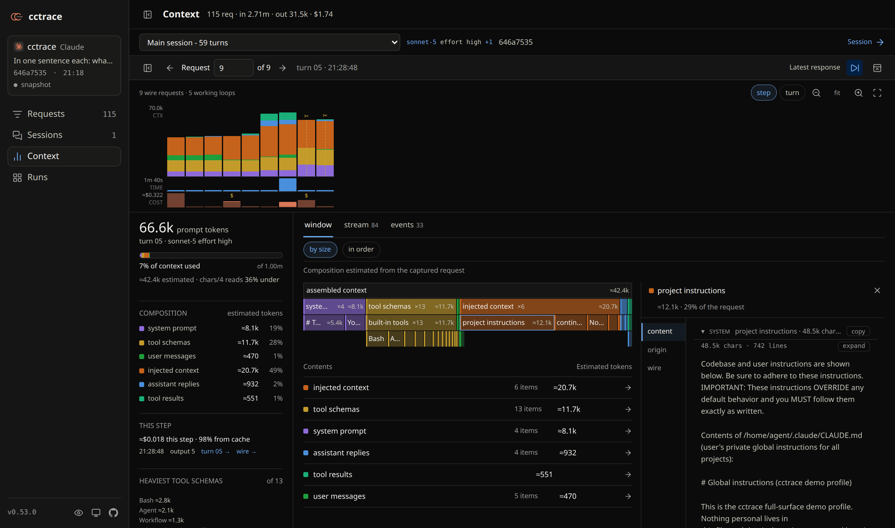

YOUR CODING AGENT, OBSERVABLE.
See the whole
agent session.
Follow the work. Find what fills the context.
Inspect every
request that made it happen.
Open source. Runs locally. No cctrace account.
Injected context occupies 49% of this window.
A real captured session. Composition calculated by cctrace.
One session. Three ways in.
Open interactive demo ↗
Open it. Inspect it. ↗Find the heavy tool results, repeated instructions, and compaction boundaries. Click through to the content behind each block.
Real captured session · current UI
Find the weight.
Know where to look.
A large context window is a starting point. Find which file was read again, which instructions keep returning, and which tool schemas were never called.
Let your agent inspect its own context ↗cctrace doctor
What's in this context? Find duplicates, repeated reads, and unused tool schemas.
cctrace insights --scan
Where did the tokens and estimated cost go across runs? Inspect cache reads, writes, and the heaviest sessions.
cctrace view
Return to a saved session. Replay the work, follow subagents, and reopen the exact requests.
Same agent.
Now with a window.
Launch your agent through cctrace. It opens a local browser view and records the run for later.
Requires
Bun, openssl,
and your agent's CLI.
# install oncenpm install -g @thevibeworks/cctrace# start Claude Code with tracingcctrace
Or
cctrace codex · cctrace kimi
Captured data stays on your machine. Credential fields are redacted; conversation content is preserved. Review traces before sharing.
Capture scope & privacy ↗Install options ↗